Anthropic vient de sortir quelque chose qui s'appelle Claude Tag et c'est fondamentalement une façon d'utiliser Claude directement dans Slack avec toute votre équipe. Pensez-y comme à une manière multijoueur d'interagir avec Claude à l'intérieur de Slack. Anthropic a même pris les devants en affirmant que l'équipe produit l'utilise 65 % du temps lorsqu'elle utilise Claude dans l'ensemble de son département. Donc dans cette vidéo, je vais décortiquer toutes les nouveautés de cette sortie, parler de mes principaux enseignements tirés de leur article de lancement, et je vais également vous le montrer en direct pour que vous puissiez voir comment ça fonctionne. Ensuite, nous parlerons de qui y a accès à partir d'aujourd'hui. Donc sans plus attendre,
Interface & Outils : Application de messagerie d'équipe Slack.
Contenu textuel & Code : Messages d'équipe, mentions d'utilisateurs et listes de tâches générées par un agent IA nommé Claude.
Action / Démonstration : Navigation et démonstration de l'intégration de Claude au sein d'une interface de messagerie collaborative.
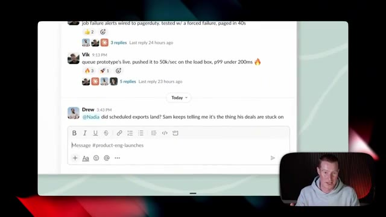
🔍 Agrandir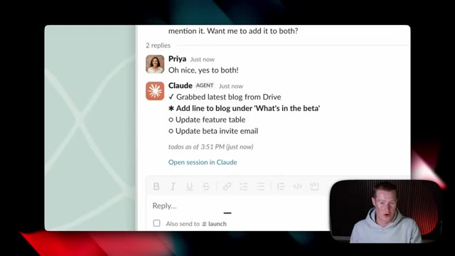
🔍 AgrandirPlongeons directement là-dedans. Ils ont effectivement publié cet article ici, comme ils le font chaque fois qu'ils sortent un nouveau produit, mais j'ai pris lesdevants pour vous le résumer de manière accessible afin que vous puissiez voir quels sont nos principaux enseignements à ce sujet. Très bien, alors plongeons directement là-dedans. Anthropic a pris lesdevants et a déclaré : nous voyons le tag de Claude comme le début d'une évolution du code de Claude et cela rend le modèle encore plus proactif et fonctionne mieux avec toute une équipe. L'utilisation des tags avec Claude est désormais l'un des principaux moyens par lesquels nous réalisons les choses chez Anthropic. Aujourd'hui, 65 % du code de notre équipe produit est créé par notre version interne du tag de Claude, ce qui est assez fou, si vous y réfléchissez.
Interface & Outils : Navigateur web affichant un document de synthèse ou un article (Miro/Notion ou outil similaire).
Contenu textuel & Code : Texte d'article expliquant l'évolution de Claude Code vers Claude Tag sur Slack et ses cas d'usage chez Anthropic.
Action / Démonstration : Le présentateur commente le texte affiché et met en avant les points clés du résumé.
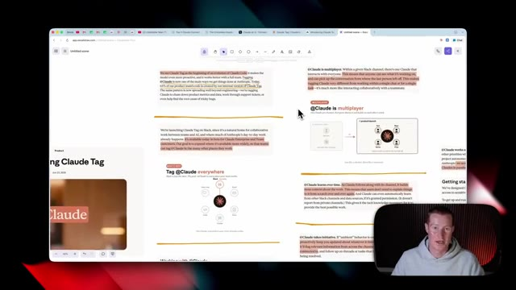
🔍 Agrandir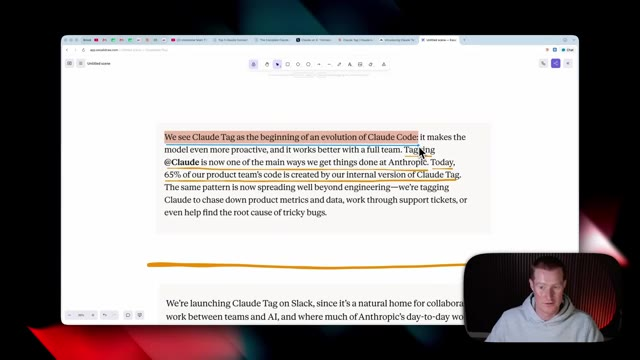
🔍 Agrandirles personnes qui construisent Claude dans Claude Code l'utilisent 65 % du temps maintenant parce qu'ils ont eu ça pendant ces deux derniers mois. Alors pensez à ceci comme à un Claude Code qui est conçu pour toute votre équipe et que vous pouvez déclencher directement dans Slack sans avoir besoin d'aller sur l'application de bureau Claude ou d'avoir besoin d'aller dans un IDE comme Cursor ou même dans le terminal pour utiliser Claude Code.
Interface & Outils : Navigateur web affichant un document texte (application de prise de notes ou éditeur en ligne).
Contenu textuel & Code : Texte surligné expliquant que « 65 % of our product team's code is created by our internal version of Claude Tag » et que l'outil est intégré sur Slack.
Action / Démonstration : Le présentateur commente le texte affiché à l'écran concernant l'utilisation interne de Claude par les équipes d'Anthropic.
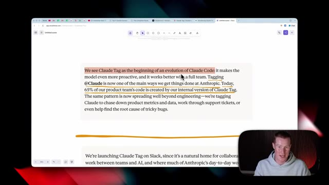
🔍 AgrandirEnsuite, ils continuent en disant que nous lançons Claude sur Slack, puisque c'est un foyer naturel pour le travail collaboratif entre les équipes et l'IA. Et c'est là que se déroule déjà la majeure partie du travail quotidien d'Anthropic. Actuellement, il est disponible en version bêta pour les clients Enterprise et Team de Claude. Vous devez donc obligatoirement être soit sur le forfait Team, soit sur le forfait Enterprise pour y accéder, ce que j'ai pris soin de payer afin de pouvoir vous le montrer si vous n'êtes pas des utilisateurs Enterprise ou Team. Ensuite, ils ont voulu dire que notre objectif est d'élargir sa disponibilité plus largement afin que les équipes puissent identifier Claude dans les nombreux autres endroits où elles travaillent. Et c'est l'un des points principaux que je veux
Interface & Outils : Navigateur web affichant une page de documentation ou un outil d'édition/partage de texte, avec un encart vidéo du présentateur en bas à droite.
Contenu textuel & Code : Texte surligné expliquant le lancement de Claude sur Slack en version bêta pour les clients Enterprise et Team d'Anthropic.
Action / Démonstration : Le présentateur commente le texte affiché à l'écran concernant l'intégration de Claude dans Slack.
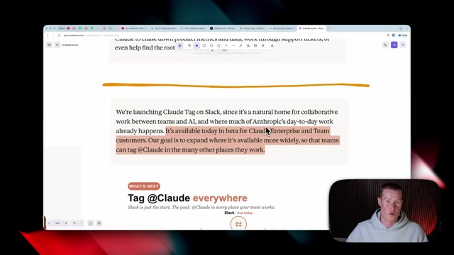
🔍 Agrandirmarteler à partir de cette sortie. C'est en quelque sorte poser les bases pour que nous puissions utiliser Claude pratiquement partout où nous travaillons, que ce soit sur Slack, Gmail, ou des CRM spécifiques que nous utilisons. Pratiquement tous ces différents endroits où nous interagissons avec notre équipe, ils prévoient de déployer Claude, ou je suppose qu'on pourrait appeler ça la fonctionnalité de balise Claude comme ils l'appellent. Donc encore une fois, à l'heure actuelle, c'est uniquement actif sur Slack, mais imaginez quand vous aurez ça sur, vous savez, Microsoft Teams ou Claude Code, votre logiciel de tickets de support, et même sur Gmail.
Interface & Outils : Navigateur web affichant une application de schématisation ou de présentation (type Miro ou similaire).
Contenu textuel & Code : Schéma en étoile illustrant l'intégration centrale de Claude avec différents canaux de travail (Slack, Email, Docs, Tickets, Code, Team chat).
Action / Démonstration : Présentation visuelle de l'intégration omniprésente de Claude dans les environnements de travail professionnels.
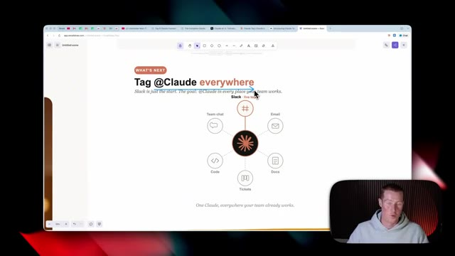
🔍 AgrandirEt maintenant, nous utilisons simplement cette balise Claude comme le pôle central où nous sommes capables d'interagir avec toutes ces choses. Ensuite, ils ont dit que si vous avez déjà travaillé avec Claude Code ou co-work auparavant, la balise Claude semblera très familière. Nous devons simplement identifier Claude avec une requête en termes simples, et il décomposera les tâches en étapes puis les traitera tour à tour en utilisant les outils auxquels il a accès. Et encore une fois, c'est un autre point clé ici. Non seulement nous interagissons avec ceci comme un chatbot et posons des questions spécifiques et Claude nous donne un résultat, mais il utilise les outils que
Interface & Outils : Navigateur web, outil de prise de notes ou application de documentation (ex: Excalidraw ou site web d'Anthropic).
Contenu textuel & Code : Texte explicatif : "Working with @Claude. If you've worked with Claude Code or Cowork before, Claude Tag will feel familiar. Tag @Claude with a request in simple terms..."
Action / Démonstration : Le présentateur commente le texte affiché à l'écran concernant l'utilisation de la balise Claude.
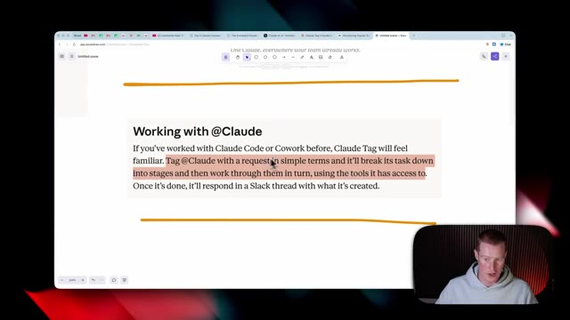
🔍 Agrandirnous avons déjà préconfiguré Claude pour se connecter à, et il extrait des informations de ces différentes sources. Maintenant, si vous n'êtes pas déjà familiers, nous pourrions connecter Claude à n'importe quelle application que nous utilisons au jour le jour. Donc que ce soit Gmail ou HubSpot, CRM, Airtable, Spotify, toutes ces différentes applications. Nous pouvons donc désormais extraire des données de là-bas directement à l'intérieur de Slack sans avoir à nous rendre dans ces applications en particulier. Et s'il y a une application à laquelle vous voulez vous connecter et que vous ne voyez pas directement à l'intérieur de Claude, vous pouvez toujours utiliser quelque chose comme le MCP Zapier, qui est quelque chose que j'utilise tous les jours, qui est fondamentalement un pont entre
Interface & Outils : Interface utilisateur de Claude avec le répertoire de connecteurs et navigateur web affichant le site de Zapier (zapier.com).
Contenu textuel & Code : Listes d'intégrations logicielles tierces (Gmail, HubSpot, Slack, Notion, Google Workspace) et interface de configuration de connecteurs d'IA.
Action / Démonstration : Navigation et présentation des différentes options de connexion et d'intégration d'applications tierces avec Claude.
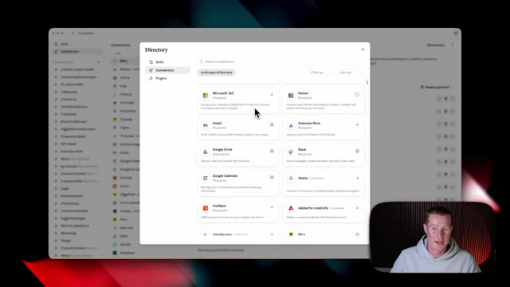
🔍 Agrandir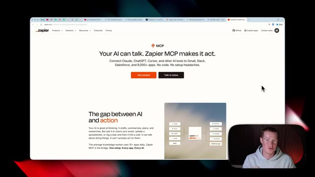
🔍 Agrandirvotre IA et plus de 9 000 applications différentes avec lesquelles Zapier s'intègre. Vous pouvez simplement créer un serveur MCP ici, même si vous n'êtes pas technique, connecter les différentes applications que vous utilisez comme Buffer ou Beehive qui n'ont pas de connecteurs préexistants à l'intérieur de l'application Claude. Et ensuite, vous cliquez simplement sur connecter, ajouter à Claude, et maintenant Zapier est connecté afin que nous puissions réellement extraire des données de ces différentes applications. Et plus nous connectons Claude à des applications, plus il sera puissant pour aller faire le travail à notre place. Et ensuite, ils continuent en disant qu'une fois que c'est fait, il répondra dans un fil de discussion Slack avec ce qu'il a créé. Très bien, alors passons en quelque sorte au
Interface & Outils : Navigateur web, interface Zapier MCP, plateforme Claude et outil de schéma (Vectornator/Vidalytics).
Contenu textuel & Code : Liste des applications intégrées à un serveur MCP (Buffer, Airtable, Google Calendar, Stripe) et schéma d'intégration d'IA multi-plateforme.
Action / Démonstration : Présentation des intégrations d'applications via les serveurs MCP et démonstration visuelle de l'écosystème de communication.
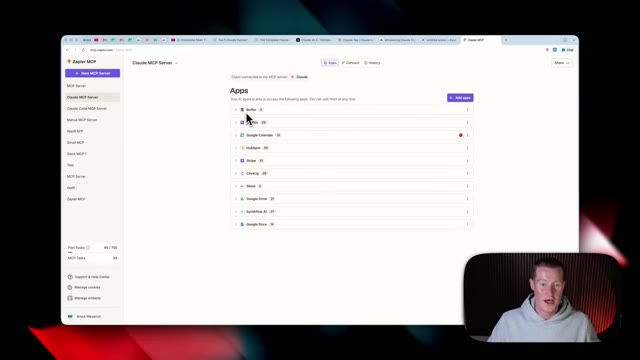
🔍 Agrandir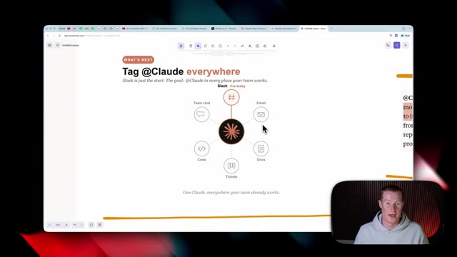
🔍 AgrandirLe concept global de cette sortie de balise Claude, Claude est maintenant multijoueur. Dans un canal Slack donné, il y a un seul Claude qui interagit avec tout le monde dans ce canal. Cela signifie que n'importe qui peut voir sur quoi il travaille et vous pouvez reprendre la conversation là où la dernière personne l'a laissée. Cela rend Claude très différent du travail au sein d'une seule discussion ou d'une seule tâche. C'est beaucoup plus proche d'une interaction collaborative avec un coéquipier. On a donc l'impression qu'il s'agit plutôt d'un second cerveau que toute votre équipe peut utiliser. L'une des choses cool que j'ai remarquées depuis que je joue avec ça, et je vous le montrerai en direct plus tard dans la vidéo,
Interface & Outils : Navigateur web affichant un outil de type tableau blanc / éditeur de texte en ligne.
Contenu textuel & Code : Texte affiché : "@Claude is multiplayer. Within a given Slack channel, there's one Claude that interacts with everyone..."
Action / Démonstration : Le présentateur explique le concept de l'intégration multijoueur de Claude dans un canal Slack tout en montrant le texte explicatif à l'écran.
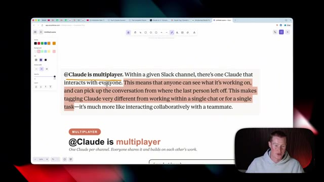
🔍 Agrandirc'est que vous pouvez lui demander de résumer tout un fil de discussion que vous avez manqué pendant votre absence. Et il vous donnera un aperçu condensé de tous les points clés que vous avez manqués, des choses qui sont, vous savez, urgentes auxquelles vous devez répondre, ou d'un message spécifique que vous auriez pu rater. Et pour moi, quand j'utilise Slack personnellement, des choses se cachent dans tous ces différents fils de discussion dont je ne savais même pas qu'ils avaient commencé. Et maintenant que tout le monde peut utiliser ce Claude directement dans votre Slack au sein de votre équipe, cela peut être assez puissant. Voici un excellent visuel pour vous expliquer cela un peu plus en détail si vous avez du mal à suivre. Donc Claude est multijoueur et nous obtenons un Claude par canal auquel nous accordons réellement l'accès. Et ensuite, tout le monde le partage
Interface & Outils : Navigateur web affichant une application de notes ou de présentation avec un encart vidéo du présentateur.
Contenu textuel & Code : Texte affiché : "@Claude is multiplayer. Within a given Slack channel, there's one Claude that interacts with everyone..." avec des portions surlignées en orange.
Action / Démonstration : Le présentateur explique et commente le concept de l'intégration collaborative de Claude dans les outils de communication.
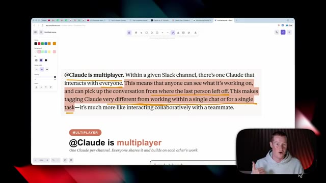
🔍 Agrandirqui se trouve à l'intérieur de ce canal. Donc, avant nous avions réellement un Claude directement à l'intérieur de Slack auquel nous pouvions nous connecter, mais c'était fondamentalement juste un échange entre vous et Claude. Au lieu que vous ayez besoin d'aller sur l'application de bureau Claude ou sur Claude.ai, vous êtes capable de discuter directement avec lui juste là, mais cela n'était pas du tout aussi performant que cette nouvelle fonctionnalité de balise Claude.
Interface & Outils : Navigateur web affichant une application de tableau blanc ou de présentation en ligne (type Miro, Whimsical ou similaire).
Contenu textuel & Code : Schéma textuel et graphique expliquant la différence entre un chat privé avec Claude ("one task, then it is gone") et un mode collaboratif en équipe dans un canal Slack ("#product-launch" avec Sam, Maya, Devon et Priya).
Action / Démonstration : Le présentateur explique visuellement le passage d'une interaction individuelle à un usage collaboratif de Claude au sein d'une équipe.
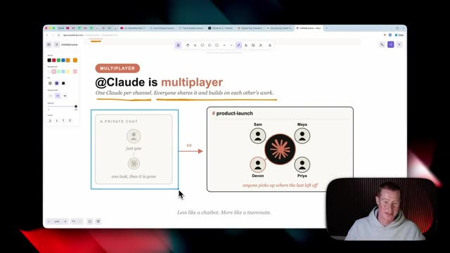
🔍 AgrandirDonc maintenant avec Claude tag, nous avons ce canal Slack appelé Product Launch avec tous nos différents membres d'équipe ici. Nous avons Sam, nous avons Sam, nous avons Devin, nous avons Maya, nous avons Priya. Et maintenant, nous avons tous accès à cette espèce de second cerveau ici, qui est Claude tag. Très bien, alors ensuite, il est dit qu'au fur et à mesure que Claude suit ce canal, il accumule plus de contexte sur le travail. Cela signifie que les utilisateurs n'ont pas besoin de tout réexpliquer depuis le début sans arrêt. C'est plutôt génial. J'ai hâte de voir cela en pratique. Et ils ont même fini par mentionner que Claude peut également apprendre automatiquement d'autres canaux Slack
Interface & Outils : Navigateur web affichant un outil de dessin ou de présentation (type Excalidraw ou Miro) avec la webcam du présentateur incrustée en bas à droite.
Contenu textuel & Code : Texte et schémas montrant le passage d'un chat privé ("just you, one task, then it is gone") à un canal partagé ("#product-launch") où plusieurs membres de l'équipe interagissent avec Claude.
Action / Démonstration : Le présentateur explique visuellement comment Claude fonctionne en mode multijoueur et collaboratif au sein d'une équipe.
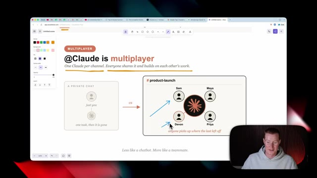
🔍 Agrandiret des sources de données uniquement si l'autorisation lui a été accordée. Maintenant, cette fonction-ci est probablement la plus cool. Claude est capable de prendre des initiatives et ils appellent ça le mode ambiant. Et le résumé en gros de ça, c'est que Claude vous tiendra proactivement au courant de tout ce qu'il pense que vous pourriez avoir besoin de savoir. Il signalera les informations pertinentes provenant de tous les canaux dans lesquels il se trouve et des outils auxquels il est connecté.
Interface & Outils : Navigateur web avec un outil de prise de notes ou de présentation.
Contenu textuel & Code : Texte en anglais décrivant les fonctionnalités du mode ambiant (« @Claude takes initiative. If ambient behavior is enabled... ») et le présentateur visible en incrustation.
Action / Démonstration : Le présentateur explique les capacités du mode ambiant et la prise d'initiative proactive de l'assistant.
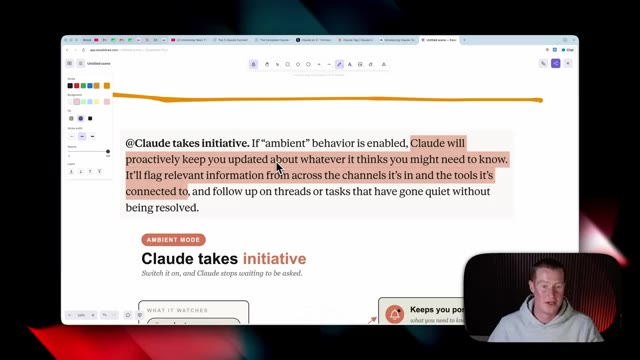
🔍 AgrandirDonc, quand j'entends ça, je pense à quelque chose comme OpenClaw, où c'était en quelque sorte la toute première fois qu'on voyait des tâches cron en pratique et plutôt dans un outil grand public, où il était capable d'aller dire : hé, Brock, tu viens de recevoir un e-mail urgent, ou hé, Brock, je vois que tous tes concurrents font des vidéos sur ce sujet, tu devrais foncer et faire de même. Et comme il prend des initiatives, je n'ai fondamentalement pas besoin d'envoyer un message à Claude pour lui demander de faire quelque chose, il le fait tout simplement de manière automatique lorsqu'il estime que c'est nécessaire. Donc encore une fois, voici en quelque sorte un schéma qui l'explique visuellement : il est capable de surveiller ces différents projets. Alors imaginez que nous ayons Project X, Team Sync et Design Review comme différents canaux Slack, et ce n'est pas tout.
Interface & Outils : Navigateur web affichant une application de schématisation ou un outil de présentation ("being resolved") et le présentateur en médaillon.
Contenu textuel & Code : Schéma intitulé "Claude takes initiative" avec les sections "WHAT IT WATCHES" (#project, #team-sync, #design-review) connectées à un noyau central "always watching", et des sorties vers "Keeps you posted", "Flags what matters", "Chases loose ends".
Action / Démonstration : Le présentateur commente le fonctionnement des agents autonomes et des notifications proactives basées sur des flux de travail automatisés.
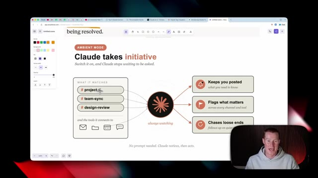
🔍 Agrandirmais il a aussi les outils auxquels il est connecté via Claude dont j'ai parlé tout à l'heure. Puisque Claude peut toujours surveiller, il vous tiendra au courant de ce que nous devons savoir. Il signalera des choses spécifiques qui comptent et il sera capable d'aller effectivement courir après les détails en suspens pour nous. Maintenant, un exemple parfait de cela en pratique est celui-ci pour le support client. Alors imaginez que nous donnons à Claude l'accès à notre compte Gmail, qui est utilisé pour notre support client. Et disons qu'il y a quelques e-mails que nous recevons où un client dit qu'il ne peut pas se connecter à notre application. Par exemple, Claude sera capable de repérer cela parce qu'il a accès à cet e-mail juste ici. Ensuite, il
Interface & Outils : Navigateur web affichant une application de schéma (Excalidraw).
Contenu textuel & Code : Schéma intitulé "Claude takes initiative" avec des flux de données montrant "what it watches" (#project-x, #team-sync, #design-review) vers un cœur "always watching", et des sorties vers "Keeps you posted", "Flags what matters", et "Chases loose ends".
Action / Démonstration : Présentation visuelle du concept de veille et d'initiative de Claude par le présentateur en médaillon.
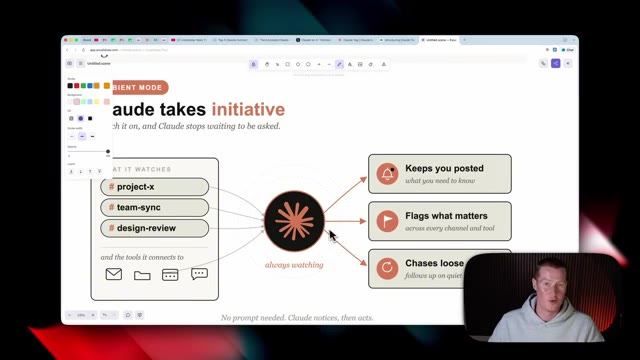
🔍 Agrandirwill be able to go and alert the right people. And what I mean by alerting the right people is it can go and start a thread inside of the customer support Slack channel in order to flag that with the customer support team. But it can also go ahead and flag this with the engineering team as well. So they could go and be proactive and actually try to fix this issue. And Claude's basically the middleman here. So you don't need somebody who's actively searching in your Gmail to then go and spot this and then alert these different channels inside of Slack. This is just one example that I thought of that could be pretty cool in practice, but I'm really interested to see
Interface & Outils : Navigateur web affichant une application de tableau blanc (Mral / logiciel de diagramme) et incrustation vidéo du présentateur.
Contenu textuel & Code : Schéma intitulé 'Ambient mode, in action' montrant un e-mail de client signalant un problème de connexion ('Customers can\'t log in'), un agent central et des alertes vers '#customer-support' et '#engineering'.
Action / Démonstration : Le présentateur explique comment l'IA détecte automatiquement un problème par e-mail et alerte de manière proactive les bonnes équipes sur Slack.
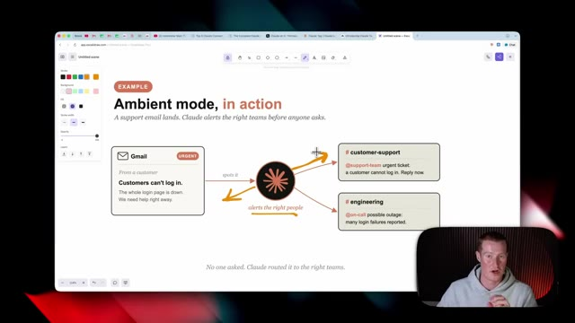
🔍 Agrandirother use cases of this. Next, Anthropic said that at Claude works asynchronistically. Set Claude a task and you could focus on your other priorities while it works. Very similar to, you know, if we've ever used Claude Cowork or Claude Code, that is nothing new. And it says it could even schedule tasks for itself, pursuing a project autonomously over hours or days. That sounds obviously pretty promising, but I want to see this in practice because something tells me that that might not be as capable as they're making it sound right now. They went on to say that we now spend much of our time delegating tasks to many Claude's in parallel, which over time, this is going to be more and more
Interface & Outils : Navigateur web / application de prise de notes ou traitement de texte en ligne.
Contenu textuel & Code : Texte sur l'intelligence artificielle Claude, mentionnant : "@Claude works asynchronously. Set Claude a task... we now spend much more of our time delegating tasks to many Claudes in parallel."
Action / Démonstration : Le présentateur commente le texte affiché à l'écran concernant les capacités asynchrones de l'assistant IA.
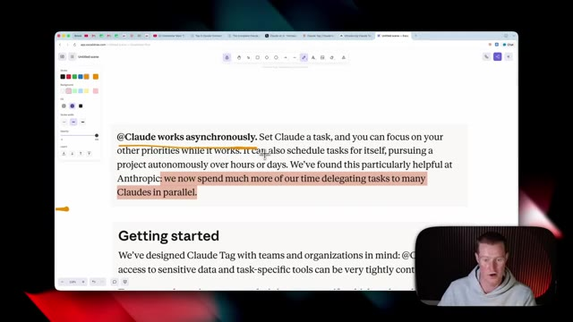
🔍 Agrandirhow we work. Instead of us going and doing a thing, it's us delegating that task to our agent, which is now Claude Tag. All right, so let's quickly, all right, so now let's talk about privacy and how this actually works, what context does this have, et cetera, because this is something when I originally heard about this release, I thought this was promising, but then privacy instantly became one of the things that I was concerned about.
Interface & Outils : Navigateur web affichant une application de prise de notes ou un document annoté (ex: interface Excalidraw ou similaire)
Contenu textuel & Code : Texte surligné en jaune/orange : "@Claude works asynchronously. Set Claude a task, and you can focus on your other priorities while it works...". Section intitulée "Getting started" visible en bas.
Action / Démonstration : Le présentateur commente le texte à l'écran concernant la délégation des tâches à Claude et son fonctionnement asynchrone.
So what they're saying is that we've designed CloudTag with teams and organizations in mind. Cloud's access to sensitive data and task-specific tools can be tightly controlled. To get up and running, system administrators specify which tools and information the model should have access to and which channels. Think of this like creating separate clod identities for different uses.
Interface & Outils : Navigateur web affichant un document annoté (outil de dessin/annotation Excalidraw ou similaire) et flux vidéo du présentateur.
Contenu textuel & Code : Texte explicatif sur Claude Tag (« We've designed Claude Tag with teams and organizations in mind... ») avec des surlignages orange sur les passages clés.
Action / Démonstration : Le présentateur commente le texte affiché à l'écran concernant la gestion des accès et des équipes pour le modèle d'IA.
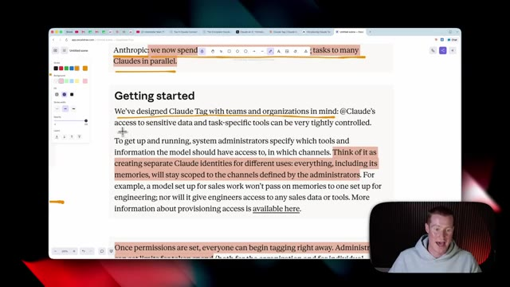
🔍 AgrandirEverything, including its memories, will stay scoped to the channels defined by the administrators. For example, a model set up for sales work won't pass on memories to one set up for engineering. So whatever department or Slack channel we add this clod tag to, it's only going to have information and context within that channel. So that way you don't like cross pollinate between your different organizations inside of your company, which you obviously would not want that to be the case. Once permissions are set, everyone can begin tagging right away and administrators can set limits for token spend. So this is kind of interesting. This is something
Interface & Outils : Navigateur web affichant une page de documentation ou d'article (application de notes/collaboration type Miro ou similaire avec des outils de dessin sur le côté), et incrustation vidéo du présentateur.
Contenu textuel & Code : Texte explicatif sur Claude Tag, la gestion des accès par canal, les identités séparées et la gestion des limites de tokens.
Action / Démonstration : Le présentateur commente le texte à l'écran tout en surlignant ou en lisant les passages clés concernant la sécurité et l'organisation des données.
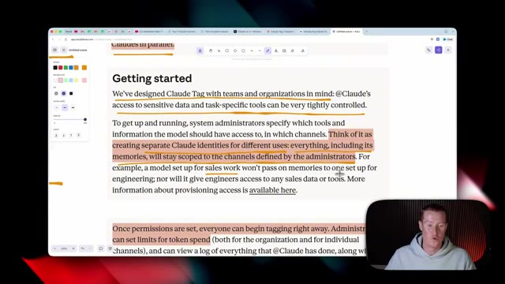
🔍 Agrandir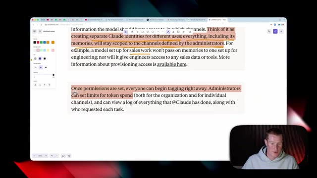
🔍 Agrandirthat obviously over time may become an issue if there are certain people or certain channels that maybe just spam this for some reason. At least we know that we have the ability to control how much not only organizations and channels are able to use this, but also individual users as well. All right, so I dug even deeper into the privacy and I want to break this down here because this is pretty important. So Anthropic says in addition to credentials, admins also define repository access, connectors, which is really big, the tools and API keys that Claude uses to
Interface & Outils : Navigateur web affichant une application de documentation textuelle avec des annotations visuelles.
Contenu textuel & Code : Texte explicatif sur la configuration des rôles, la gestion des identités séparées et la limitation des dépenses en tokens pour les organisations et les canaux individuels. [DESC_ACTION_1] Le présentateur commente les options de contrôle des accès et de limitation d'utilisation des modèles d'IA.
Action / Démonstration : Explications face caméra et analyse conceptuelle des marchés.
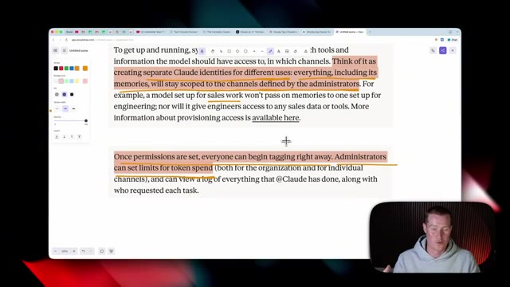
🔍 Agrandir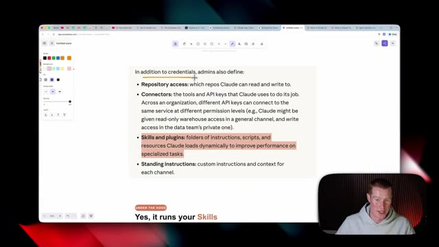
🔍 Agrandirfasse son travail. Et au sein d'une organisation, différentes clés d'API peuvent se connecter au même service à différents niveaux de permission. Je crois que cela signifie que chaque utilisateur individuel peut configurer ses propres clés d'API pour les applications qu'il utilise. De cette façon, l'administrateur n'a pas nécessairement à payer pour tout cela. Je ne suis pas tout à fait sûr, c'est quelque chose que je ne maîtrise pas totalement, et je ne veux pas dire de bêtises ici. Et les compétences et les plugins, c'est vraiment très important.
Interface & Outils : Navigateur web, outil de prise de notes/schémas (Excalidraw).
Contenu textuel & Code : Texte explicatif en anglais titré 'In addition to credentials, admins also define:' listant des éléments comme 'Repository access', 'Connectors', 'Skills and plugins', et 'Standing instructions', avec des sections surlignées en jaune et rose.
Action / Démonstration : Le présentateur explique les concepts liés aux clés d'API et aux niveaux de permission pour les outils d'IA au sein d'une organisation.
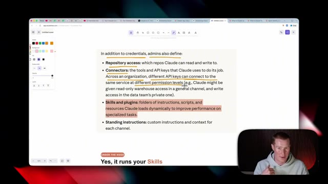
🔍 AgrandirSo apparently we can run our specific skills that we have in plugins. But then the question becomes, does the admin supply the skills and you could only use those or could each individual use the skills that they've crafted? I'd probably assume that the admin has to configure it and it's not just going to allow all individual users to run their skills, you know, across this Slack channel, but I could be wrong. All right. So let's go ahead and set this up now. First of all, there will be a link to this in the description to access this page here. And again, you do have to be on either the team or the enterprise plan for Claude. So I'm going to click add to Slack.
Interface & Outils : Application de notes / tableau blanc en ligne (type Miro ou Excalidraw) avec le présentateur en incrustation vidéo.
Contenu textuel & Code : Texte explicatif sur les rôles des administrateurs, listant 'Repository access', 'Connectors', 'Skills and plugins' (surligné en orange) et 'Standing instructions'.
Action / Démonstration : Le présentateur commente le texte affiché à l'écran concernant les compétences (skills) et plugins gérés par les administrateurs.
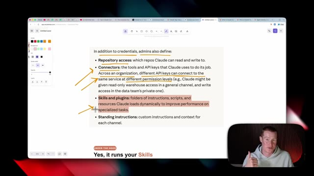
🔍 AgrandirAnd from here, we need to configure which workspace we wanted to have access to. So I'm going to click AI accelerator. And then we could also manage the permissions here. So go through and make sure you're only granting access to, you know, certain permissions that you actually wanted to have. I'm just going to go ahead and click allow. It says Claude is installed. So now I need to open up Slack.
Interface & Outils : Navigateur web affichant l'interface de Slack.
Contenu textuel & Code : Message d'erreur : « You are not authorized to install Claude on Automatable », avec une incitation à contacter les administrateurs d'applications.
Action / Démonstration : Le présentateur montre l'écran de configuration des intégrations d'applications et les restrictions d'accès/permissions dans Slack.
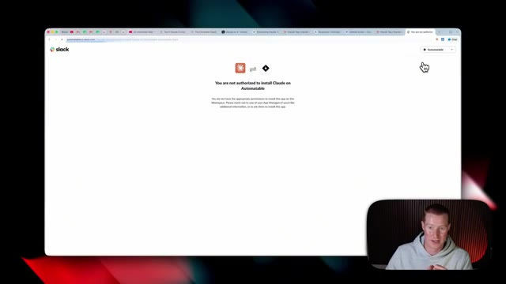
🔍 AgrandirMaintenant, ce que nous devons faire, c'est aller dans l'administration de Slack. Alors, cliquez sur cette petite icône de roue dentée. Ensuite, à partir d'ici, nous allons descendre jusqu'à applications et flux de travail. Donc, juste ici, il semble que j'aie déjà ajouté Claude. Et si je reviens sur Slack, je vais simplement, en gros, dans n'importe quel canal auquel je veux ajouter Claude et je fais juste arobase Claude. Vous pouvez voir qu'il n'est pas dans le canal, mais si je clique sur ceci, que j'envoie cela, le robot Slack va demander si je veux l'ajouter. Alors, cliquons simplement sur ajouter.
Interface & Outils : Slack
Contenu textuel & Code : Menu d'administration et paramètres d'un espace de travail Slack Pro.
Action / Démonstration : Navigation dans les menus d'administration de Slack pour accéder aux applications et flux de travail.
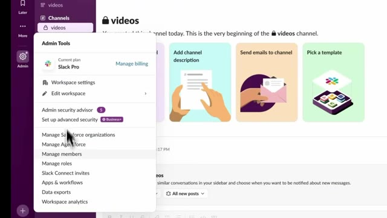
🔍 AgrandirEt nous allons faire de même pour tous nos différents canaux auxquels nous voulons avoir accès. Maintenant, ici, il me donne un message qui explique en gros comment cela fonctionne. Voici comment je collecte et traite le contexte. Lorsque vous me mentionnez dans un fil de discussion, je lis automatiquement les messages récents de ce fil pour comprendre le contexte de la conversation. Je peux accéder aux fichiers partagés dans la conversation et les analyser. Lorsque vous me mentionnez, je ne traite que les messages des fils de discussion où je suis explicitement mentionné. Vos conversations sont privées et accessibles. Je ne conserve pas vos conversations Slack et je ne m'entraîne pas dessus. C'est donc très intéressant. Très bien. Je viens donc de lui envoyer un message vraiment simple, euh, vous savez, ici. J'ai juste dit : @Claude, comment ça va ?
Interface & Outils : Application Slack
Contenu textuel & Code : Message de présentation de l'application Claude dans Slack, détaillant comment elle collecte et traite le contexte (lecture des messages dans les fils de discussion, accès aux fichiers partagés, confidentialité, etc.).
Action / Démonstration : Affichage des instructions et explications sur l'utilisation de l'assistant IA Claude au sein d'un canal Slack.
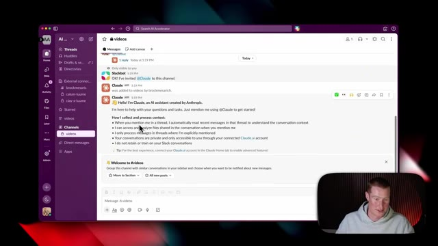
🔍 AgrandirEuh, ça a affiché cette petite icône sympa montrant que ça fonctionnait. Et à partir d'ici, ça montre que je dois en fait sélectionner un répertoire dans lequel il peut travailler. Donc, laissez-moi aller de l'avant et sélectionner l'un de mes dépôts. Très bien. J'ai donc demandé à Claude, comment ça va ? Peux-tu récupérer mes derniers e-mails de ce matin auxquels je n'ai pas répondu ? Et pour ce cas d'utilisation, j'avais déjà préconfiguré Gmail dans mon compte Claude. J'ai donc pu récupérer des informations à partir de ce connecteur que j'avais. Et il est donc allé récupérer deux e-mails auxquels je dois répondre. C'est donc plutôt cool d'utiliser ça en pratique. Et bien sûr, c'est à l'intérieur d'un nouveau canal Slack parce que je ne
Interface & Outils : Application de messagerie professionnelle Slack et assistant IA Claude.
Contenu textuel & Code : Boîte de dialogue de sélection de dépôt (repository) et conversation textuelle avec l'assistant Claude intégrant la gestion d'e-mails.
Action / Démonstration : Sélection d'un répertoire de travail et interaction avec l'assistant IA dans un canal de discussion.
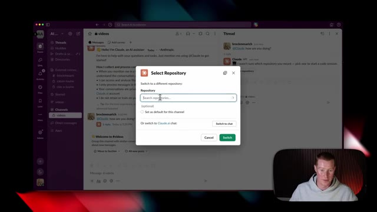
🔍 Agrandir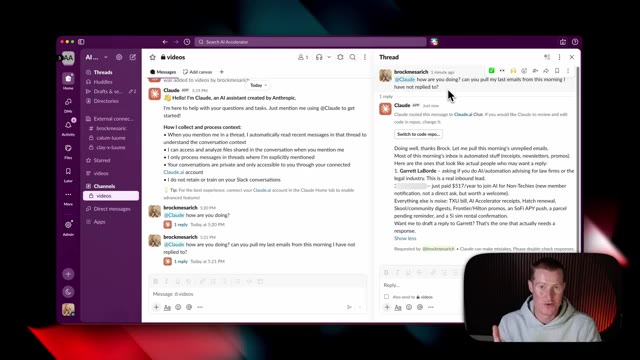
🔍 Agrandirje veux montrer l'un des canaux Slack au sein de mon entreprise parce qu'il y a des informations privées là-dedans. Mais comme contexte, mais comme le contexte des canaux Slack s'accumule, je vois bien à quel point cela pourrait être assez puissant puisque cela dispose alors de connaissances générales sur toutes ces informations. Très bien. Donc personnellement, je n'ai pas beaucoup de cas d'usage que je pourrais montrer en ce moment encore une fois, parce que je ne veux pas montrer d'informations sensibles sur l'entreprise, mais ce sont quelques exemples qu'Anthropic nous donne. Laissez-moi donc passer en revue quelques-uns de ces exemples. Vous pouvez donc voir ici qu'Elena a utilisé arobase Claude et a essentiellement dit, quels sont les principaux comptes d'entreprise par dépenses au cours des sept et 28 derniers jours ?
Interface & Outils : Slack, navigateur web (Anthropic Claude website).
Contenu textuel & Code : Interactions textuelles avec l'assistant Claude dans Slack, instructions d'intégration et exemples de requêtes professionnelles.
Action / Démonstration : Navigation et présentation des fonctionnalités de l'assistant Claude intégré dans Slack.
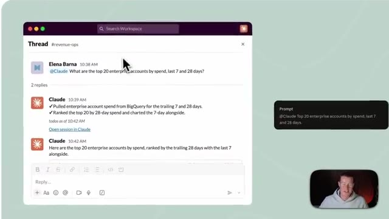
🔍 AgrandirClaude est ensuite allé récupérer des informations depuis BigQuery, qui est l'application qu'ils utilisent. Et ensuite, il a effectivement fourni une ventilation ici. Comme vous pouvez le voir, cela montre tout cela classé avec, vous savez, le montant des dépenses sur sept et 28 jours. Et en plus de cela, il a même envoyé un PNG qu'il est allé générer. C'est plutôt cool. En détaillant cela avec ce graphique sympa ici.
Interface & Outils : Application de messagerie Slack avec intégration de l'assistant Claude.
Contenu textuel & Code : Un message de l'utilisateur demandant à Claude les 20 principaux comptes par dépenses sur 7 et 28 jours, et la réponse de Claude indiquant qu'il a récupéré les données depuis BigQuery.
Action / Démonstration : Consultation d'une discussion sur Slack illustrant l'interaction entre un utilisateur et l'assistant IA relié à BigQuery.
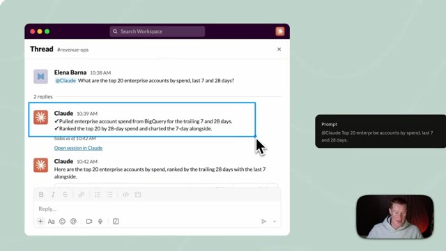
🔍 Agrandirensuite, c'est un cas assez simple, Camilla l'a juste étiqueté et a dit : "Je rencontre Acme à deux heures, qu'est-ce que je dois savoir ?" et le système est allé chercher dans son calendrier en gros pour décomposer tout ce que je devais savoir en termes de préparation pour cette réunion. Nathan a envoyé un message disant : "Surveille ce canal, faites le tri de ce qui arrive et traitez le carnet de commandes, étiquetez-moi seulement quand quelque chose requiert mon intervention." Donc Claude utilise l'agent pour analyser automatiquement... on dirait qu'il y a eu une erreur de paiement ici que Datadog a signalée dans le canal Slack, et ensuite l'agent Claude a automatiquement contacté Nathan parce que cela nécessite son attention. Vous pouvez donc voir à quel point c'est puissant
Interface & Outils : Interface de messagerie collaborative (type Slack) intégrant des agents IA (Claude).
Contenu textuel & Code : Messages textuels, prompts utilisateurs (« @Claude I'm meeting Acme at 2... » et « @Claude Watch this channel... »), réponses structurées de l'agent IA contenant des informations commerciales, des points de blocage et des analyses techniques de performance.
Action / Démonstration : Démonstration de l'utilisation d'un agent IA intégré dans un outil de messagerie pour automatiser la préparation de réunions et la gestion de alertes de production.
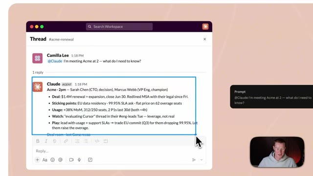
🔍 Agrandir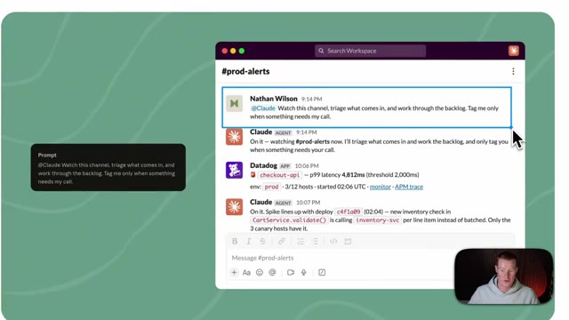
🔍 Agrandirc'est à ce moment-là que nous avons ceci qui surveille nos canaux Slack spécifiques et identifie les personnes concernées. Voilà donc. C'est une nouvelle balise Claude qui vient d'être publiée par Anthropic. Si vous avez apprécié cette vidéo, assurez-vous de vous abonner à cette chaîne. Je couvre l'intelligence artificielle pour les non-techniciens. Cela étant dit, je ne veux pas vous prendre plus de temps. J'espère que vous passez une bonne journée et je vous vois dans la prochaine. À la vôtre.
Interface & Outils : Navigateur web affichant une page d'Anthropic avec une interface Slack simulée.
Contenu textuel & Code : Interface Slack avec un message de Claude analysant des alertes système et effectuant un diagnostic technique.
Action / Démonstration : Présentation visuelle de la nouvelle fonctionnalité de balise Claude par le présentateur.
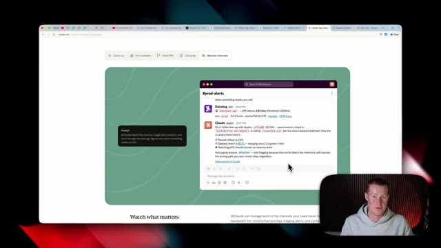
🔍 Agrandir